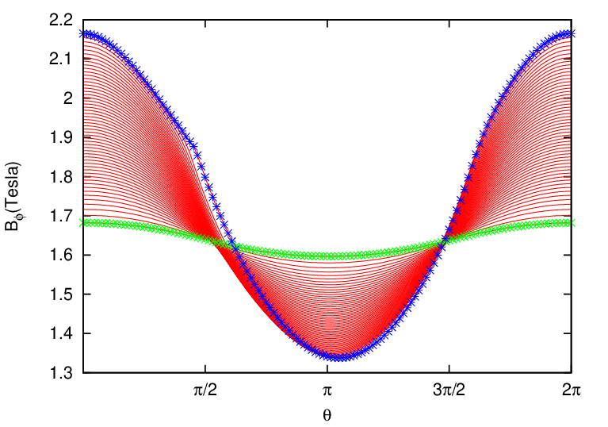
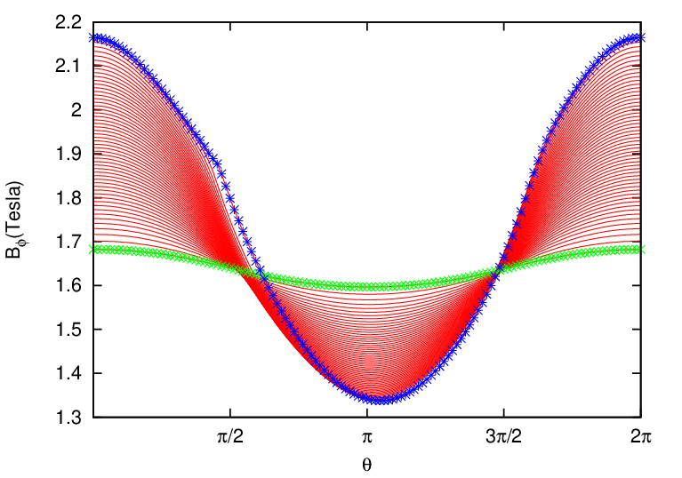

7.1 Finding magnetic surfaces
Two-dimensional data Ψ(R,Z) on a rectangular grids (R,Z) is read from the G_EQDSK file (G-file) of
EFIT code. Based on the 2D array data, I use 2D cubic spline interpolation to construct a interpolating
function Ψ = Ψ(R,Z). To construct a magnetic surface coordinate system, I need to find the contours
of Ψ, i.e., magnetic surfaces. The values of Ψ on the magnetic axis, Ψ0, and the value of Ψ on the last
closed flux surface (LCFS), Ψb, are given in G-file. Using these two values, I construct a
1D array “psival” with value of elements changing uniform from Ψ0 to Ψb. Then I try to
find the contours of Ψ with contour level value ranging from Ψ0 to Ψb. This is done in the
following way: construct a series of straight line (in the poloidal plane) that starts from the
location of the magnetic axis and ends at one of the points on the LCFS. Combine the
straight line equation, Z = Z(R), with the interpolating function Ψ(R,Z), we obtain a
one variable function h = Ψ(R,Z(R)). Then finding the location where Ψ is equal to a
specified value Ψi, is reduced to finding the root of the equation Ψ(R,Z(R)) − Ψi = 0.
Since this is a one variable equation, the root can be easily found by using simple root
finding scheme, such as bisection method (bisection method is used in GTAW code). After
finding the roots for each value in the array “psival” on each straight lines, the process of
finding the contours of Ψ is finished. The contours of Ψ found this way are plotted in Fig.
7.
In the above, we mentioned that the point of magnetic axis and points on the LCFS are needed to
construct the straight lines. In G-file, points on LCFS are given explicitly in an array. The location of
magnetic axis is also explicitly given in G-file. It is obvious that some of the straight lines Z = Z(R)
that pass through the location of magnetic axis and points on the LCFS will have very large or even
infinite slope. On these lines, finding the accurate root of the equation Ψ(R,Z(R)) −Ψi = 0 is difficult
or even impossible. The way to avoid this situation is obvious: switch to use function R = R(Z)
instead of Z = Z(R) when the slope of Z = Z(R) is large (the switch condition I used is
|dZ∕dR| > 1).
In constructing the flux surface coordinate with desired Jacobian, we will need the absolute value of
the gradient of Ψ, |∇Ψ|, on some specified spatial points. To achieve this, we need to construct a
interpolating function for |∇Ψ|. The |∇Ψ| can be written as
By using the center difference scheme to evaluate the partial derivatives with respect to R and Z in the
above equation (using one side difference scheme for the points on the rectangular boundary), we can
obtain an 2D array for the value of |∇Ψ| on the rectangular (R,Z) grids. Using this 2D array,
we can construct an interpolating function for ∇Ψ by using the cubic spline interpolation
scheme.


 
